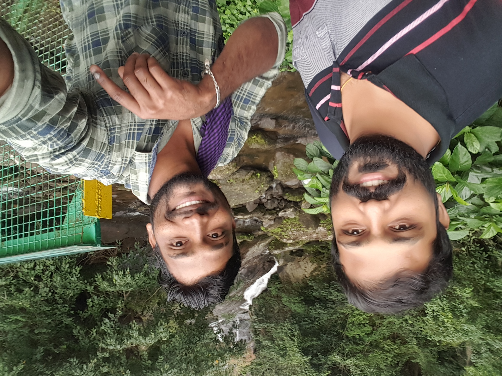
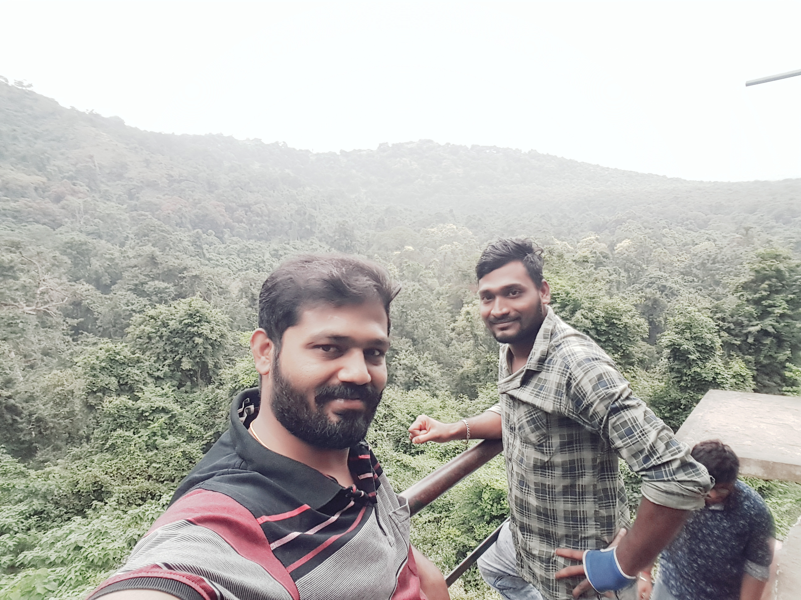
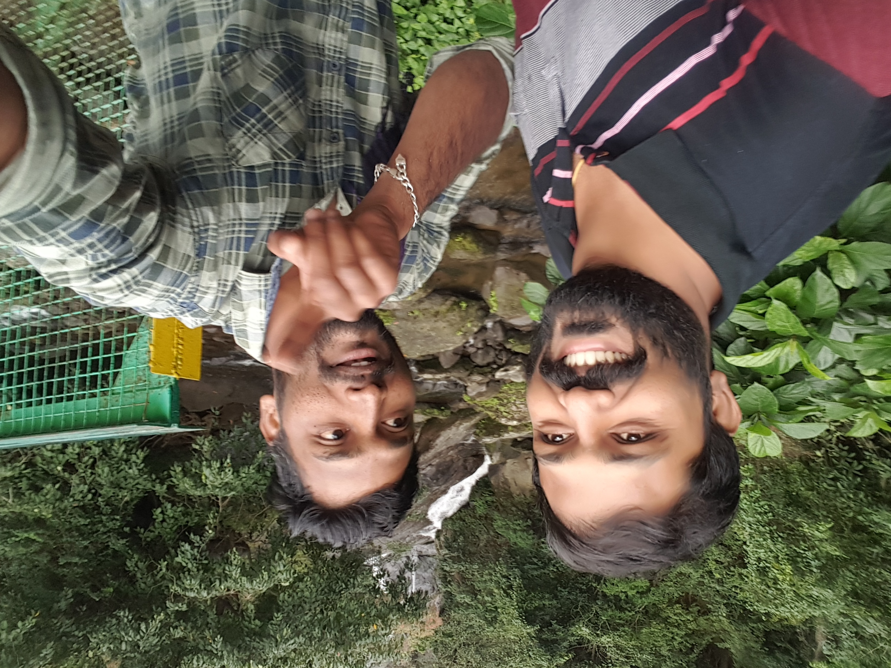

 "Siruvani Waterfalls and the dam named after them are located 36 km (22 mi) west of Coimbatore in the Western Ghats. The reservoir at Siruvani was built for Tamil Nadu by the Kerala government with funds collected by the Tamil Nadu government to meet the drinking water requirements of Coimbatore. The gateways on either side of the road across the dam are typical of the Kerala and Tamil architectural styles. Siruvani is also home to certain tribals like the Mudugars and Irulars. The view from the falls and the dam is a tourist attraction. The government gave its approval for construction of the `masonry gravity' dam in February © 1915; work did not start immediately; if one correlates the information from the Archaeology Department, Tamil Nadu Water Supply and Drainage (TWAD) Board and the district gazette. The villagers of Boluvampatti and Alandurai opposed the scheme, as they feared it would affect them. But they were convinced about the benefits of bringing Siruvani water to a town that was growing. Construction began in 1927. Siruvani site was in an extremely unfriendly terrain and wild animals frequented the place. So, all those engaged in construction work stayed in the guest house near Iruttu pallam. They rode to the dam site on horses with gunmen providing security. Even now,[when?] a visit to the Siruvani dam is not much different (except that one doesn't have to travel on a horse). Forest guards continue to accompany those who visit the dam. The initial cost of construction was Rs. 2,17,725 (for 23 feet). The reason for selecting the site was that it had perennial streams. The area below the Siruvani, Muthikulam falls, Gobiyaru, Solaiyaru, Pattiyaru, Veeraru and Paambaru falls, the main sources of supply, was identified for construction. There were plans to commission a hydroelectric project at Siruvani, but the move was dropped as the Pykara project in the Nilgiris was mooted at the time. Major and minor construction works continued till 1984 and the total cost was Rs. 26.12 crores. The drawal from the dam was in 1931 was 113 lakh litres for a population of more than 95,000. In the 1970s, the drawal was scaled down to 130 lakh litres from 186 lakh litres in the summer as inflow into the Muthikulam reduced by half."
The siruvani falls in ©1913 copyright
 